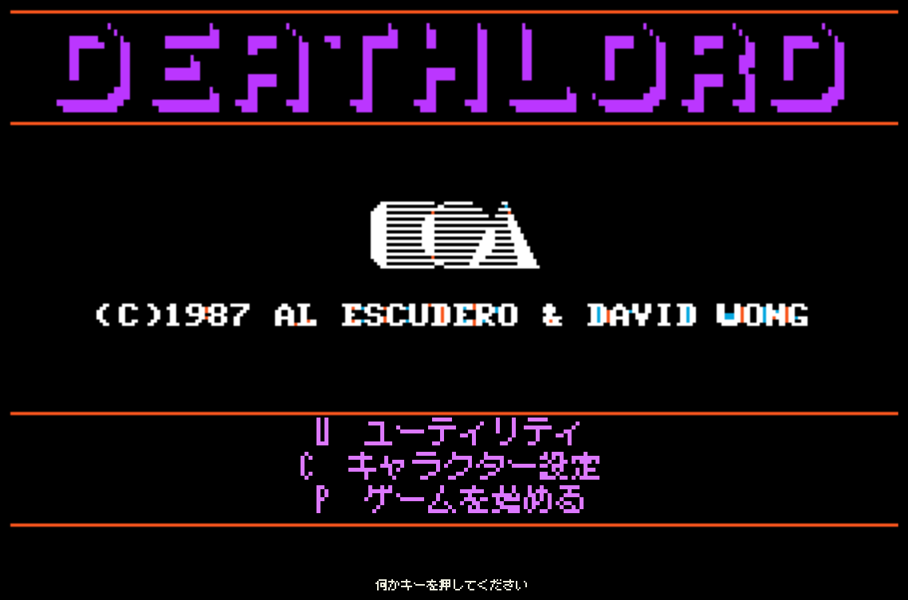
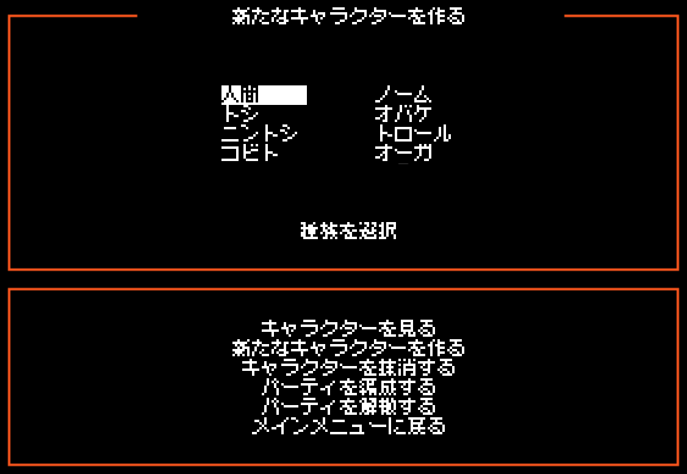
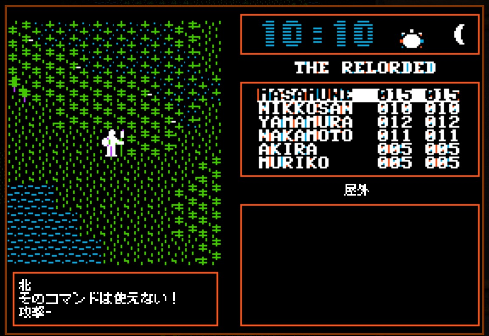
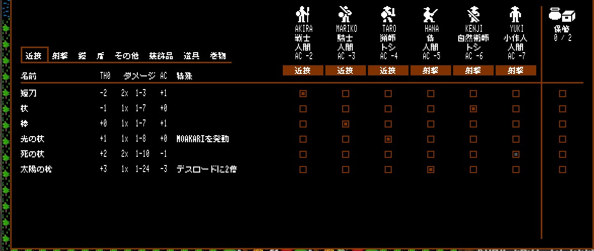

スクリーンショット








日本語になるもの
- NPC の台詞、看板、ダンジョンの碑文、手紙
- 戦闘・移動・コマンドのメッセージ、店・寺院・修行
- メインメニュー、ユーティリティ、キャラクター作成・パーティ編成
- Relorded のメニュー、インベントリ、パーティ編集、CRT 設定
- 職業・種族・武具・地形の名前
- F9 でいつでも原文の英語に切り替え
Deathlord Relorded の導入
このパッチは Deathlord Relorded（以下 Relorded）に追加して使います。まず Relorded 本体を用意してください。ゲームのディスクイメージは Relorded に入っています。
-
Relorded をダウンロード
itch.io の Deathlord Relorded のページから、Windows 版の 3.0 テスト版（
deathlord-relorded-windows-3-test.zip）をダウンロードします。 -
ZIP をすべて展開
ZIP の中身を、好きな場所にフォルダごと展開します。
dlrl.exeの横にあるフォルダ（assets・DLRLAssets・Images・Resourcesなど）やSDL3.dllも必要なので、dlrl.exeだけを移動しないでください。 -
動作を確認
dlrl.exeを起動して、タイトル画面が出ることを確かめます。OpenGL に対応したグラフィックドライバが必要です。 署名のないテスト版のため、Windows の「PC が保護されました」が出たら「詳細情報」→「実行」で起動できます。初回の起動時に、同梱のディスクイメージをユーザーごとの保存フォルダにコピーして使います（同梱のイメージは書き換えません）。ディスクの入れ替えは不要です。
ゲームの始め方
- タイトル画面で何かキーを押し、メニューで C（キャラクター設定）を選びます。
- 「新たなキャラクターを作る」で種族・職業を選びます。能力値の確認で A を押すと、よい値が出るまで自動で振り直します。
- 6 人作ったら「パーティを解散する」→「パーティを編成する」で 6 人のパーティを組みます（Relorded は 6 人パーティ専用です）。
- メインメニューに戻って P（ゲームを始める）を選び、Space で開始します。
原作のマニュアル
コマンド・呪文・種族・職業の説明は原作のマニュアル（英語）にあります。Relorded の作者も「必ず読んでほしい」としています。
archive.org の Deathlord.pdf から読めます。
Relorded での変更点は同梱の DOCUMENTATION.md にまとまっています。
最初からやり直すときは、Relorded のメニュー「ファイル」→「最初から新しく始める」を使います（既存のキャラクターは消えます）。
インストール方法
-
Deathlord Relorded を用意
上の手順で Deathlord Relorded 3.0（テスト版、Windows）を展開し、一度起動できることを確かめておきます。
-
ダウンロード
リリースページから
DeathlordRelorded_JP_v0.9.0.zipをダウンロードし、展開します。 -
フォルダにコピー
中身の
dlrl_ja.exe・assets・DLRLAssetsを、Deathlord Relorded のフォルダ（dlrl.exeのある場所）にそのままコピーします。上書きされるファイルはありません。 -
起動
dlrl_ja.exeを起動すれば日本語になります。セーブデータは英語版と共通です。
dlrl.exe はそのまま残るので、英語版もいつでも遊べます。元に戻すときは、追加した dlrl_ja.exe・
assets\misaki_gothic_2nd.ttf・assets\misaki-LICENSE.txt・DLRLAssets\ja を削除します。
操作・注意
キー操作
| F9 | 日本語表示のオン/オフ |
| F10 | 職業・種族名を疑似日本語名／英語の D&D 名で切り替え |
| F11 | オリジナル画面（Apple II）の表示切り替え |
| Ctrl-P | キャンプ（Alt-P で一時停止） |
英語で入力するもの
会話のキーワード、呪文名、合言葉は英語（ローマ字）で入力します。台詞の中のキーワードになりそうな語には 「塔(TOWER)」のように英語を添え、呪文名（AKARI、ZUMA など）や「七つの言葉」はローマ字のまま表示します。
ベータ版について
- メニュー、キャラクター作成、移動・戦闘・コマンドのメッセージは実機で表示を確認済みです。
- 全編を通したプレイでの確認はまだで、エンディングは未確認です。
- 呪文一覧ウィンドウ（Alt-S）は画像のため英語のままです。
- キャラクター名・パーティ名はプレイヤーが付けた英字のまま表示します。
不具合・誤訳の報告
英語のまま残る文、誤訳、表示の崩れなどは GitHub の Issues にお寄せください。 どの場面か（町やダンジョンの名前、話し相手など）とスクリーンショットがあると助かります。F9 で原文に切り替えた画面もあると、さらに助かります。